The same scene in each: a layer-0 courtyard, a raised bridge (layer 1) with fighters on top and underneath, a ramp, walls, two teams. Blue ring = friend, red triangle = foe in every option. Original art; no GW1 assets. Mockup for the operator to pick one from.
Edge cases shown in each: a red and a blue character at the same spot on different layers (centre), a character halfway up the ramp (left), and a character directly under the deck's front edge.
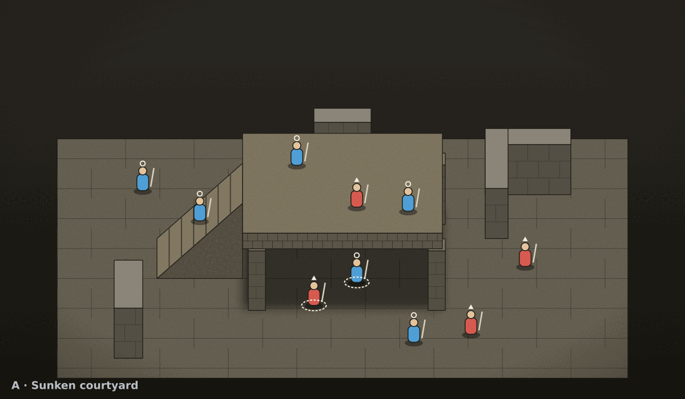
| Direction | Classic GW-inspired arena: weathered flagstone, a stone bridge on blocky piers, soft painterly shadow and vignette. Muted, earthy, serious. |
|---|---|
| Elevation and layers | Raised deck 2.4 units, slab front face with masonry courses, four piers, a blurred drop shadow on the floor below; the ramp climbs to the deck's left edge. |
| Characters | Soft-shaded bodies with a dark outline, team tabard colour, ring (friend) or triangle (foe) over the head; a character under the deck gets a dashed ground ring. |
| Readability risks | Stone-on-stone: floor, deck and walls share one hue family, so layer depends on the shadow and the front face. Under-deck characters are partly hidden by piers and the slab edge. Deuteranopia: team shapes survive, red/blue stay apart by lightness. |
| Production and render cost | Floor, walls, ramp, piers cache as one static layer; only the deck slab and characters depth-sort (about 3 groups). Cheapest of the 3D-looking options. |
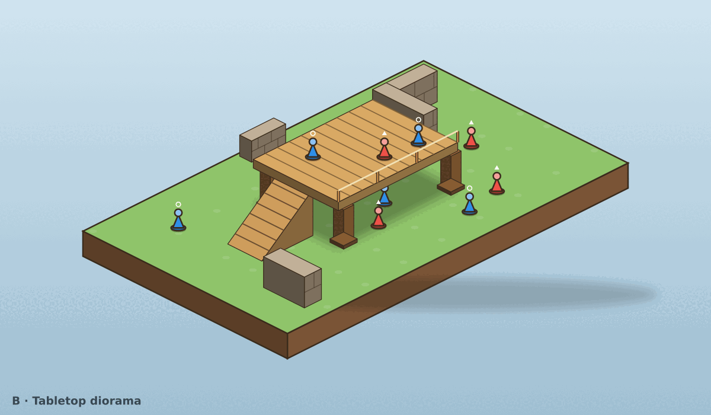
| Direction | A bright floating tabletop slab: grass, timber deck with rope rail, stone blocks. Toy-like and friendly, the clearest at a glance. |
|---|---|
| Elevation and layers | Isometric camera. Elevation is the timber deck on logs with a visible earth-cut base, the sloped ramp and a clear gap showing grass under the deck. |
| Characters | Chess-pawn tokens on a base disc with thick outlines; a ring or triangle above each. Same pawn on either layer. |
| Readability risks | Strongest layer separation (colour shift grass to timber, plus the gap). Risk: an isometric view hides characters behind tall walls and the deck's back corner. The pawn silhouette is the most colour-blind-safe. It departs most from GW1's seriousness. |
| Production and render cost | Isometric needs a different projection for every map and input picking; static layer still caches. Slab and ramp are two extra draw groups. Costs the most to fit existing maps. |
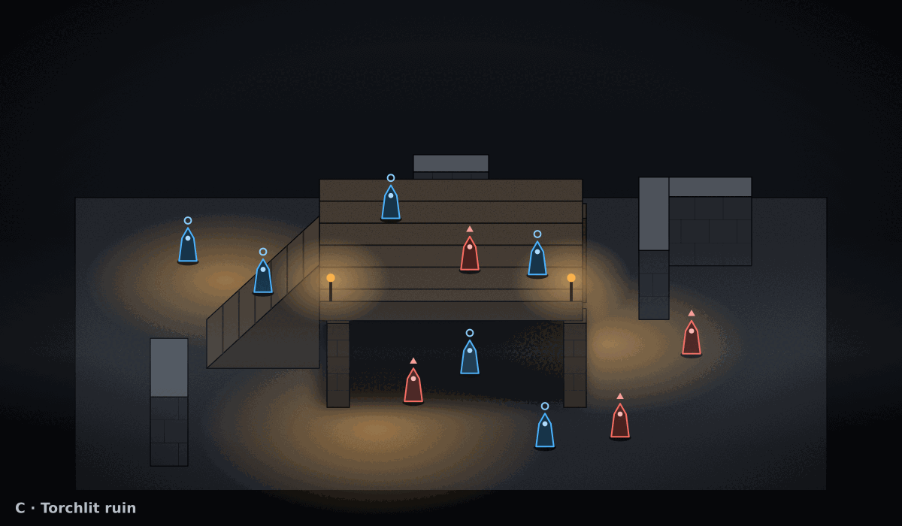
| Direction | A dark ruined hall lit by torches: near-black floor, rough timber scaffold and iron-dark stone, fog and vignette. Moody and tense. |
|---|---|
| Elevation and layers | Light does the layering: torches on the deck edge halo the upper layer, a deep shadow pools under it and the torchlight pools on the ground. |
| Characters | Hooded dark silhouettes with a team-coloured rim and a glowing core; ring or triangle above the head. |
| Readability risks | Highest atmosphere, lowest readability. Under-deck characters sit in near-black and rely on the rim light; the vignette also swallows the arena corners. Deuteranopia: blue and tan rims stay apart, but both are dim. Would need a brightness floor for ranked play. |
| Production and render cost | Lighting is baked into the static layer, so it caches; the torch flicker and fog need a per-frame overlay. Dynamic spell light would need extra passes. |
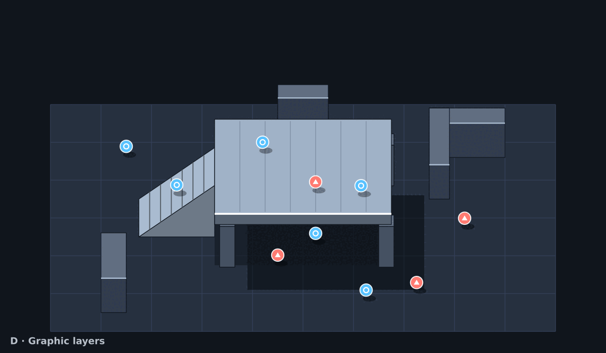
| Direction | Clean graphic fantasy: flat planes, hard drop shadows and a tinted ground below. Built from the game's own circles and rings, so it carries over the existing HUD. |
|---|---|
| Elevation and layers | A hard offset shadow and a darker, cooler tint zone mark everything under the deck; the deck is the lightest plane, with a white lip. |
| Characters | Flat discs with a white ring, plus the ring or triangle at the centre: shape first, colour second, as the art direction demands. |
| Readability risks | Best readability of an under-deck character and of the team shapes, and the cleanest deuteranopia result. Weakest GW1 mood: it reads as a diagram, not a place. |
| Production and render cost | Everything flat: one static layer, shadows as fixed polygons. The cheapest to produce and to render; the least art for a human artist to maintain. |
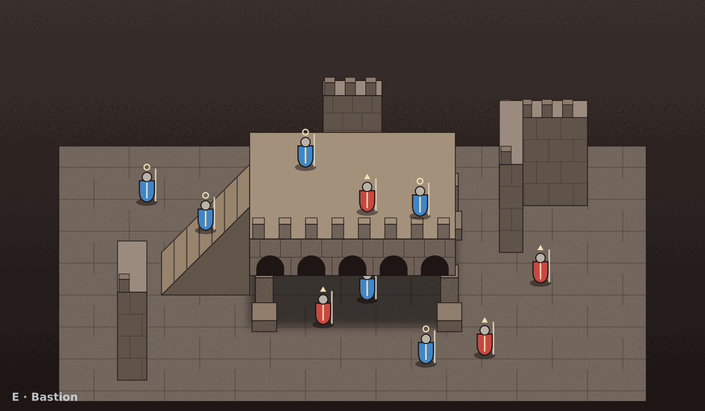
| Direction | Ornate fortifications: crenellated towers, a rampart bridge with an arcade, warm brick and stone. Heroic and martial. |
|---|---|
| Elevation and layers | The deck is a thick rampart slab with five arches in its front face and a parapet of merlons; piers have plinths. The tall walls also carry crenellations. |
| Characters | Heraldic figures: a kite-shield tabard in the team colour with a spear and helm; ring or triangle above. |
| Readability risks | Elevation reads from the arcade and parapet, which are unmistakable. Risk: tall crenellated walls and arches add clutter behind characters, and an under-deck character sits behind the arches' dark band. Deuteranopia: shield colours stay separate in lightness. |
| Production and render cost | Most unique art per map (arches, merlons, plinths): the most production work. The static layer still caches; merlons and arches are fixed geometry. |
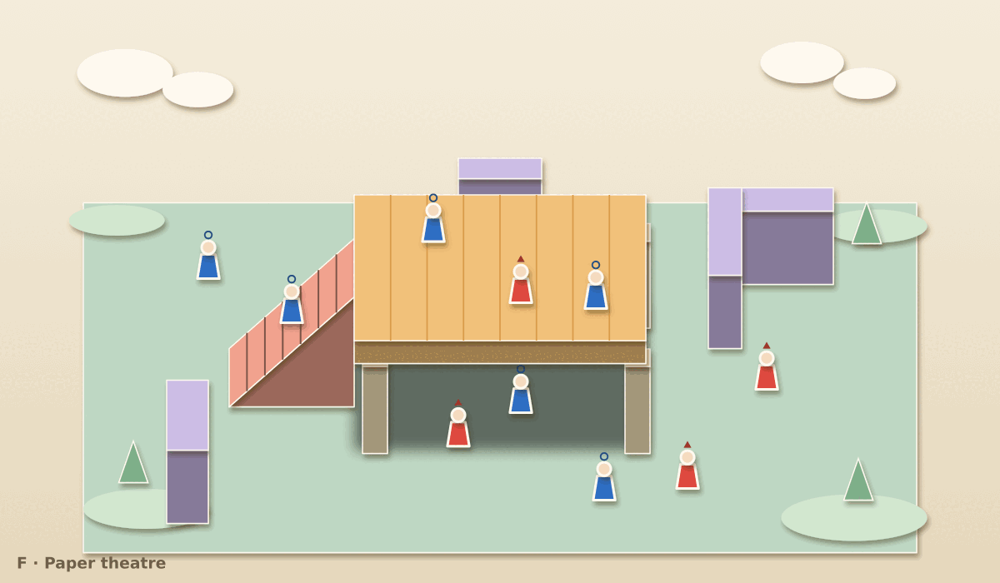
| Direction | Layered cut-paper diorama: pastel sheets, white paper edges, every layer lifting off the one below with its own drop shadow. Calm, handmade, storybook-bright. |
|---|---|
| Elevation and layers | Elevation IS the shadow: the deck sheet floats with a visible soft shadow on the sheet beneath; the ramp is a folded strip. |
| Characters | Paper dolls: a trapezoid body and round head with a white cut edge; ring or triangle over the head. |
| Readability risks | Very clear layers (the shadow does all the work) and very clean team shapes. Risk: pastel values are close, so walls, ramp and floor sit at similar lightness; a character under the deck is partly hidden by its shadow. Deuteranopia: pastels collapse to beige-grey but values still separate. |
| Production and render cost | Cheap flat shapes; the cost is one drop-shadow filter per shape per frame, so shadows would be baked into the static layer and only the characters' shadows are dynamic. Easy to re-skin per map. |
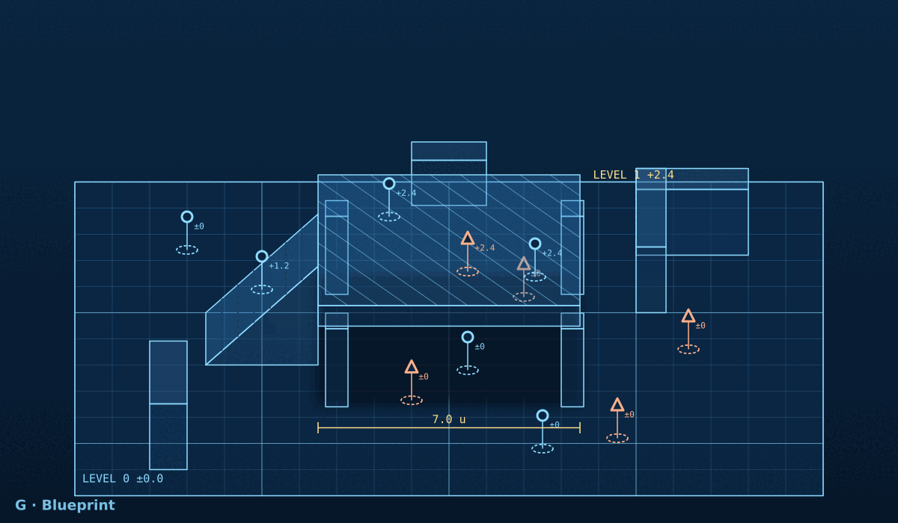
| Direction | A drafting-table view: cyan linework on navy, translucent solids, a grid, dimension lines and level tags. Technical, calm, informative. |
|---|---|
| Elevation and layers | Everything is see-through, so a character under the deck shows through it. Each character has a plumb line to its ring, with its height written beside it (±0, +1.2, +2.4), and the deck is hatched. |
| Characters | Hollow ring (friend) or triangle (foe) on a vertical stalk standing on a dashed footprint. No body at all. |
| Readability risks | Best answer to under-the-deck ambiguity of the whole set, and the cleanest colour-blind result (cyan and peach). Weakest as a place: it does not feel like a fantasy world, and the labels would have to be translated. A fine debug or tactical-map layer. |
| Production and render cost | Pure line art with no textures: the cheapest to produce, and a good fit for the game's own circles and rings. Translucency means draw order matters less. |
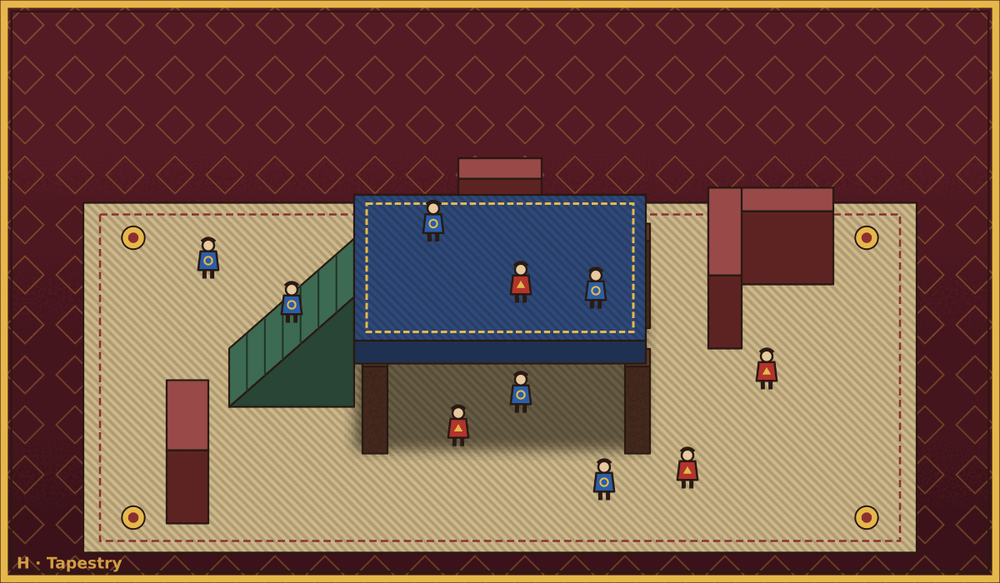
| Direction | A woven medieval tapestry: wool-coloured field, indigo deck with a gold braid, crimson walls, a stitched border and a rosette in each corner. Heraldic, warm, ceremonial. |
|---|---|
| Elevation and layers | The deck is the one blue plane with a gold braided edge; piers are dark timber and the ground below is plain wool. The ramp is green. |
| Characters | Standing heralds with a thick outline; the team shape is a gold emblem on the chest, so shape is read at the torso. |
| Readability risks | Strong identity and clear layers by hue (blue plane on tan). Risk: a limited, saturated palette means the blue deck and the blue team compete; the chest emblem is small at 16 px. Deuteranopia: reds and greens both go olive, so the green ramp merges into the field. |
| Production and render cost | Flat fills plus two repeating patterns, so the cheapest to cache and the easiest to extend with motifs. The frame and border are screen-space, not world. |
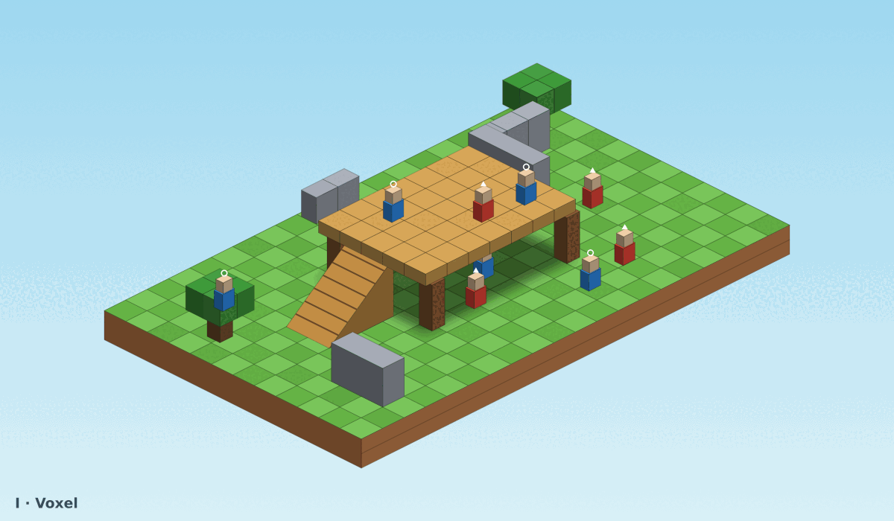
| Direction | Chunky voxel blocks on a floating chunk of earth: every wall, deck and pier is built from unit cubes, with three flat tones per cube. Playful, readable, instantly legible. |
|---|---|
| Elevation and layers | Isometric. The deck is a plank layer on dark posts, with a stepped ramp and the earth cut visible under the whole arena. |
| Characters | Cube people: a body block and a head block, with a ring or triangle floating above. |
| Readability risks | Clear block language and a good silhouette, but the isometric camera hides characters behind walls and the deck's back edge; characters are small. Deuteranopia: the green floor and red foes turn the same brown, so the foe triangle matters. |
| Production and render cost | Maps become cube grids: the easiest 3D data for a level editor, and the cheapest to author. Isometric picking and a rotated camera cost more than an oblique view. |
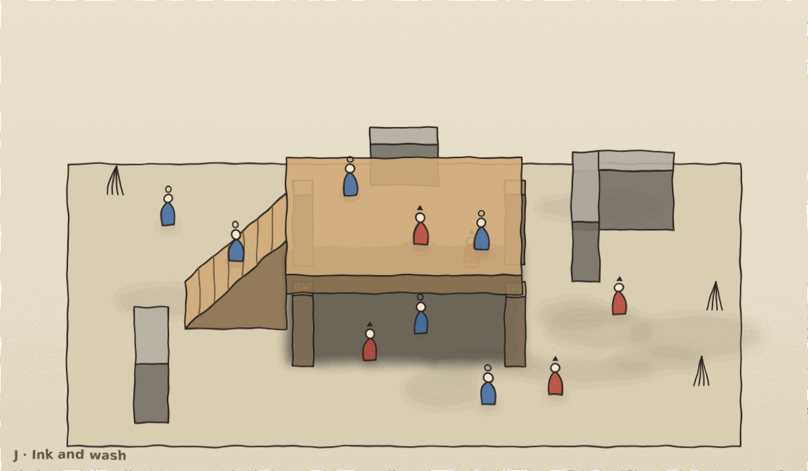
| Direction | A sumi-e ink drawing with watercolour washes on rice paper: wobbly brush outlines, soft pigment blotches, reeds. Quiet and artful. |
|---|---|
| Elevation and layers | The deck is a darker ochre wash with a heavy ink line; under it the wash pools dark, like wet ink. The ramp is a hatched ochre slope. |
| Characters | Brush figures: a tapered robe in a team wash and a round head, with an ink ring or triangle above. |
| Readability risks | The most beautiful and the least precise: the whole picture is displaced by noise, so edges wander by several pixels, which is bad for a game where position matters. Colours are muted, so the wash tints for the teams are weak. Deuteranopia: blue and rust stay apart by lightness. |
| Production and render cost | Needs a per-frame displacement shader or pre-rendered, hand-drawn textures; the most expensive of the set to render and to keep still. Not recommended where aim and position must be exact. |
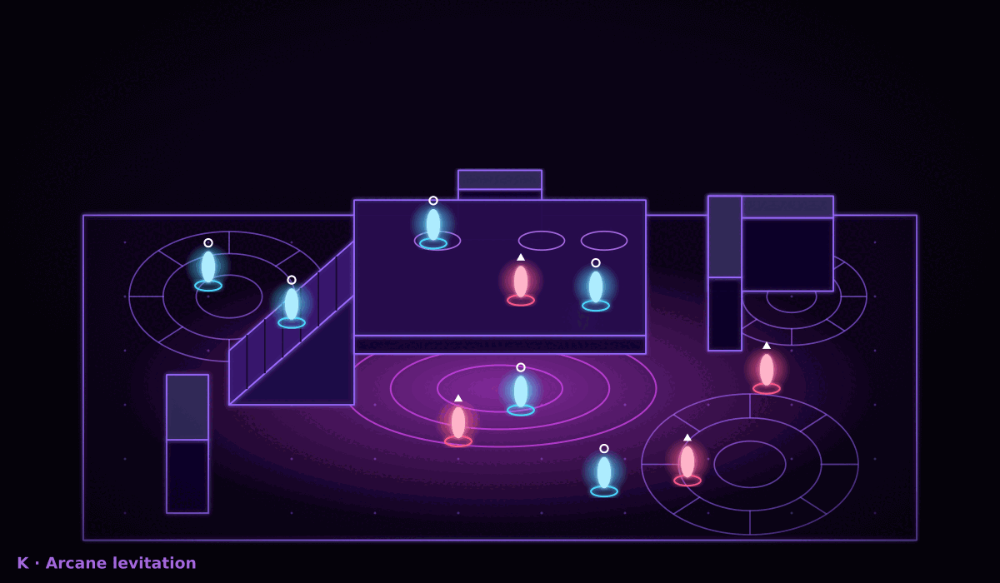
| Direction | Dark arcane tech: neon violet linework, glowing runes on the floor, and a deck that levitates with no supports. Magical, high-contrast, high-energy. |
|---|---|
| Elevation and layers | No pillars at all. The deck hovers, and the lower layer is LIT by it: a magenta glow pool and rings under the deck instead of a shadow. |
| Characters | Glowing orbs: a halo, a lens-shaped core and a stand ring in the team colour, with a ring or triangle over the head. |
| Readability risks | Characters are the brightest things on screen, so they are very readable, and the glow under the deck puts the lower layer in a clearly different light. Risk: a heavy vignette and a low-lit floor hide corners; the lack of supports loses the physical sense of height. Deuteranopia: cyan versus pink stays apart. |
| Production and render cost | Per-shape glow filters are the most expensive effect in the set; the glow would be pre-baked, with a bloom pass at best. Few assets, because the look is line plus light. |
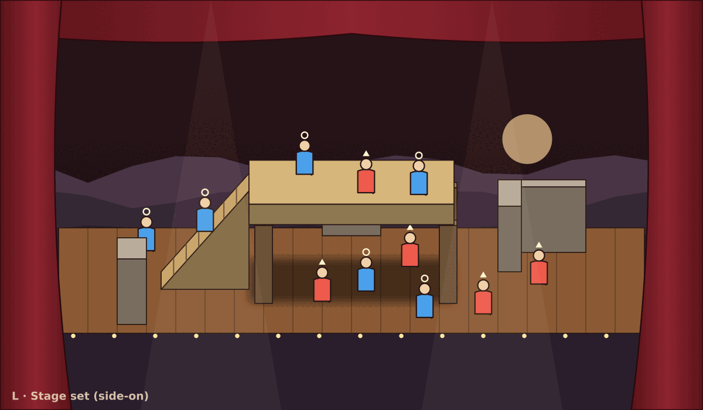
| Direction | A theatre stage seen almost side-on: painted backdrop hills, red curtains, footlights, cardboard standees on a wooden floor. Charming and theatrical. |
|---|---|
| Elevation and layers | The camera is nearly level, so height is directly visible: the deck is a raised platform seen from the front, with the ramp as a plain wedge. Depth (y) is squashed into a thin strip. |
| Characters | Cardboard standees with a small prop brace, in the team colour, with a ring or triangle above. |
| Readability risks | The clearest picture of height of the set, and the weakest picture of the plane: characters at different y overlap and hide each other, and depth is hard to read, which is the thing a top-down fighter most needs. Deuteranopia: the standees keep their lightness difference. |
| Production and render cost | Cheap to draw and to light, but the camera costs readability: it would need a ghosted overlay for overlapping characters. Better for cutscenes or the lobby than for play. |
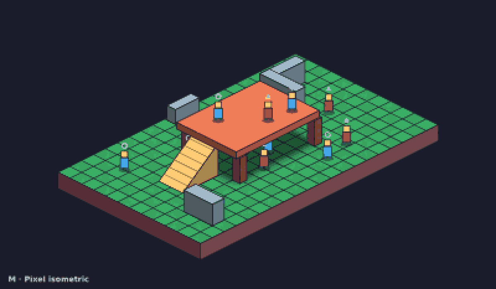
| Direction | Hard pixels on a 2:1 isometric grid with a small palette: a green checker floor, an orange deck, a chunky ramp. Retro, bold, sharp at any size. |
|---|---|
| Elevation and layers | The same isometric layout as the diorama and the voxel option, with a limited palette making the deck the warmest thing on screen. |
| Characters | Blocky sprites a few pixels tall: a coloured torso, a skin head, dark legs, and a pixel ring or triangle. |
| Readability risks | Rock-steady edges (it renders at 400 px wide and scales up 3x with no blur), but sprites are very small and a ring is only a few pixels. Deuteranopia: the foe maroon and the floor green turn similar, so the foe triangle shape is essential. |
| Production and render cost | Tiny textures, so it is the cheapest to load and the cheapest to cache; it needs a nearest-neighbour upscale and integer scaling to stay crisp. Isometric picking cost as in B and I. |
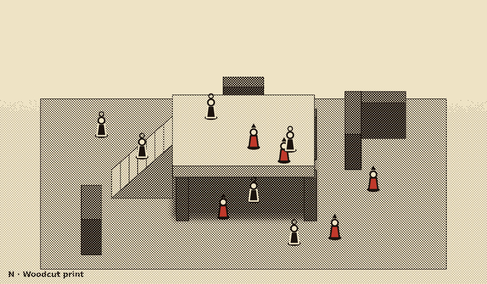
| Direction | A two-ink print: halftone-dithered environment in dark brown on cream, and flat red or black characters over it. Stark, graphic, old-book. |
|---|---|
| Elevation and layers | Pure tone: the deck is the lightest plane, the front face is dark, and the lower layer is black-hatched under the deck, so the layer difference is as strong as in any option. |
| Characters | Solid black bodies with a cream outline (friend) or vermilion with a black outline (foe), on top of the halftone, never dithered themselves. |
| Readability risks | The environment is monochrome, so the only colour in the picture is the teams, which is excellent for them. Risk: busy halftone behind small sprites can hide a thin ring, and the printed look is heavy at small sizes. Deuteranopia: black versus red-brown separates by lightness. |
| Production and render cost | The environment is a baked raster (a dither pass over a normal render), so it caches perfectly; characters stay vector. A dither shader for dynamic lights would be the one extra. |
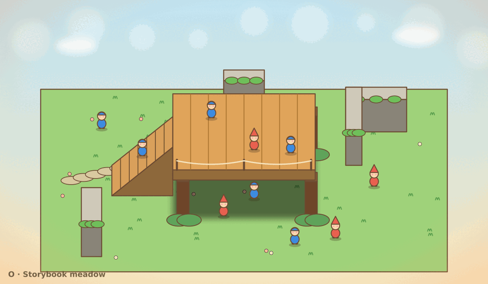
| Direction | A soft hand-painted meadow: a sunlit sky, grass tufts, flowers, a cobble path, a rope-railed log bridge on bushy posts. Warm, friendly, gentle. |
|---|---|
| Elevation and layers | A wooden bridge with a rope rail on bush-covered posts, with a path leading up to the ramp, and a darker grass shade under the deck. |
| Characters | Chubby heroes with big heads: a round cap marks a friend and a pointed hat a foe, so the team is read from the silhouette of the head before any colour. |
| Readability risks | Very readable and the friendliest; the hat shapes are the best team cue in the set. Risk: bright, busy greens and flowers add noise behind characters, and its mood is far from a PvP arena. Deuteranopia: the red foe on green meadow is the weak point, but the hat shapes carry it. |
| Production and render cost | Many small decorations (tufts, flowers, bushes), so the most unique art per map after E, all in the static layer. Characters need hat variants, which cost nothing at runtime. |
Same scene, the red and blue players standing under the deck. Left to right: ghost (outlined silhouette over the deck), roof fade (deck at 38% so the lower layer shows through), marker (floating pip with a tether to the footprint).
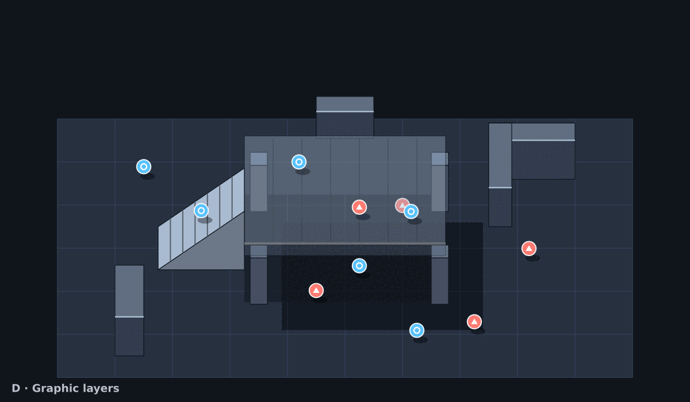
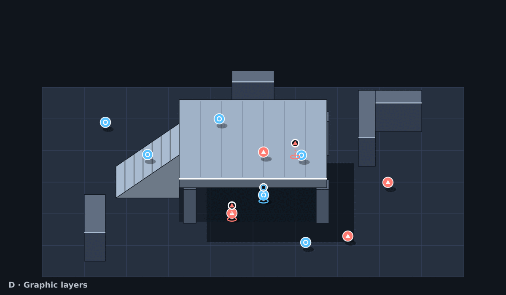
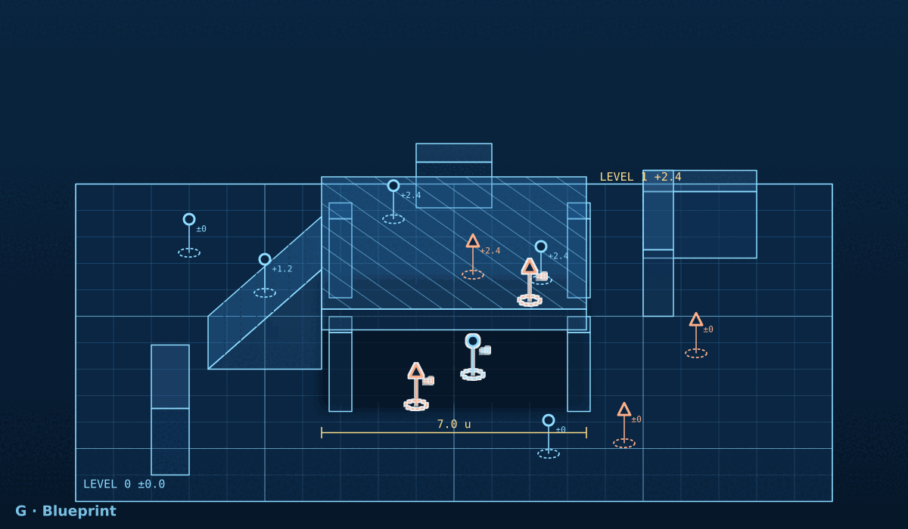
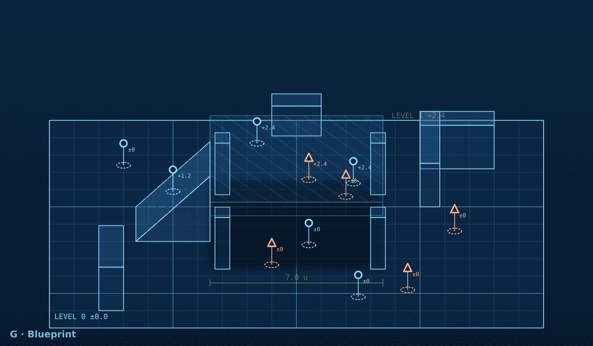
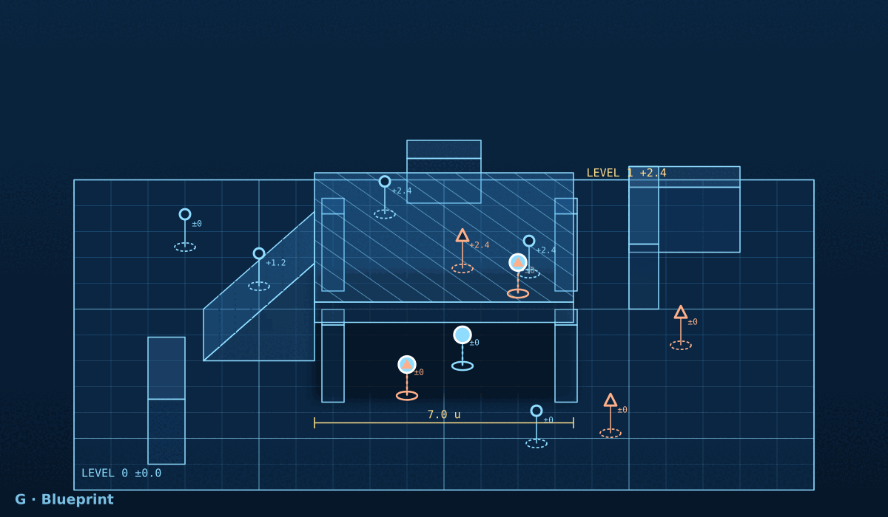
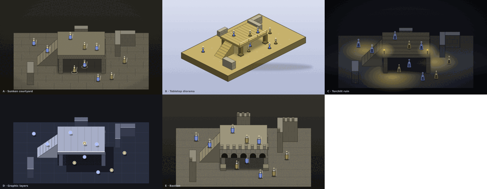
Five per row: A–E, F–J, K–O.